共享内存的秩序：缓存一致性与同步实现
沿单槽邮箱的数据交接，理解 MSI/MESI、伪共享、release/acquire、CAS 与 TAS→TTAS；用事务冲突和 CUDA 范围检验保证，复杂协议保留为深入阅读。
学完这一讲，你能
- 区分缓存权限、内存顺序和进展
- 画出可重复邮箱的双向发布边
- 解释 CAS 与 TAS→TTAS 的代价变化
缓存一致性（Coherence）：副本与写权限
算出结果之后，怎样交给另一个线程？
第三讲，一个 worker 算出局部结果，另一个 worker 再收集。现在把这次交接缩小到一个数：线程 A 算出 42，线程 B 要使用它。
| 线程 A：产生结果 | 线程 B：使用结果 |
|---|---|
① 把 42 写入 result | ① 等待 ready 表示已完成 |
② 把 ready 设为 true，表示“结果好了” | ② 读取 result，继续计算 |
result 是存放结果的位置，初始为 0；ready 是完成标志，初始为 false。表中只是想实现的交接流程，还不是已经正确同步的代码。
看起来只有两步，却藏着三个问题：
- 结果在哪里？ 两个核心各有缓存，B 怎样取得 A 写出的 42？
- 什么时候能用？ 看到了完成标志，是否就保证能正确读取结果？
- 如果多人同时修改呢？ 怎样让更新不冲突？
本讲就沿着这次交接，理解缓存、内存顺序、原子操作与锁。先从第一个问题开始。
同一份 result，两个核心从哪里读？
假设线程 A、B 此时分别运行在核心 0、1 上。它们访问的是同一个 result 地址，但通常先经过各自的缓存。
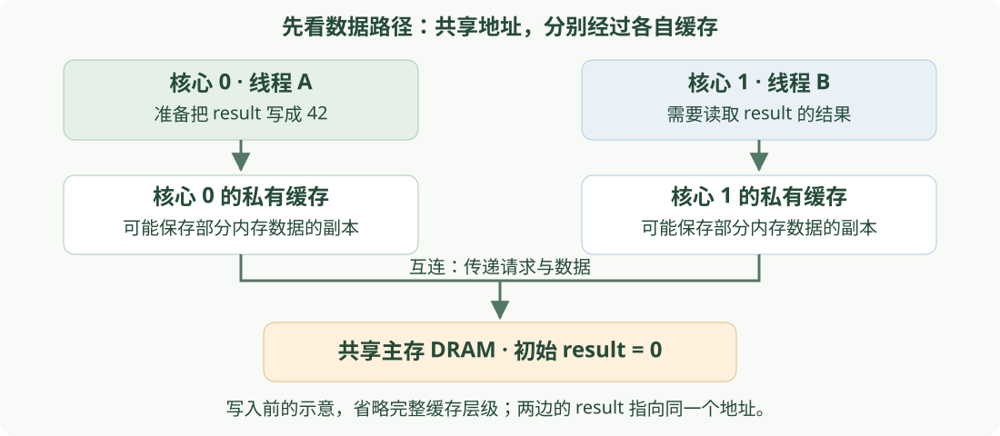
缓存（cache）是靠近核心、保存部分内存数据副本的小容量高速存储。主存 DRAM（Dynamic Random-Access Memory，动态随机存取存储器）保存程序的数据；互连负责在核心、缓存和内存系统之间传递请求与数据。
副本就是同一内存地址的数据在缓存中的一份拷贝，不是程序创建了另一个独立变量。
假设两个核心都缓存了 result=0。A 把它改成 42 后，怎样协调其他副本，避免继续使用过期数据？这就是 缓存一致性（Cache Coherence） 要解决的问题。它不要求所有缓存和主存同时更新，也可以让旧副本失效、需要时再取得有效数据。
下一页先看写入之前的协调：读可以共享，修改前要先取得写权限。
读可以共享，写之前先取得独占权限
沿用上一页的两个核心：起初，它们都缓存了 result=0，现在核心 0 想把它写成 42。核心 0 不能直接改自己的副本，否则核心 1 可能仍把旧副本当作有效数据使用。
缓存按缓存行（cache line）管理一段连续字节。要修改其中的 result，先取得整条缓存行的独占写权限。 过程如下：
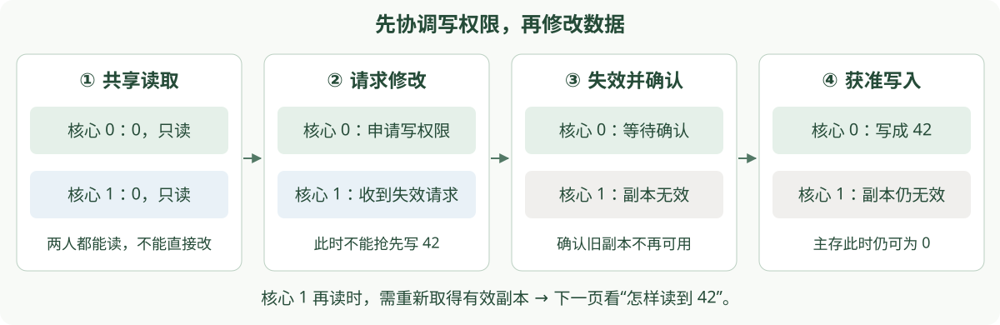
这就是单写者、多读者（SWMR，Single-Writer, Multiple-Reader）：对同一条缓存行，可以有多个只读副本；有核心持有写权限时，其他核心不能同时保有可读写的有效副本。
这里限制的是同一条缓存行，不是整台机器只能有一个核心写数据。
核心 0 现在已经写入 42，核心 1 的旧副本也已失效。但主存可能仍然是 0。此时核心 1 再来读取，谁提供最新结果？
写回缓存：最新数据未必在 DRAM
上一页，A 取得写权限并把 result 写成 42，B 的旧副本已失效。在 B 再次读取之前，主存仍可能是 0。写回（write-back）缓存先保留修改，之后再按协议需要写回主存，不要求每次写入都立即更新主存。
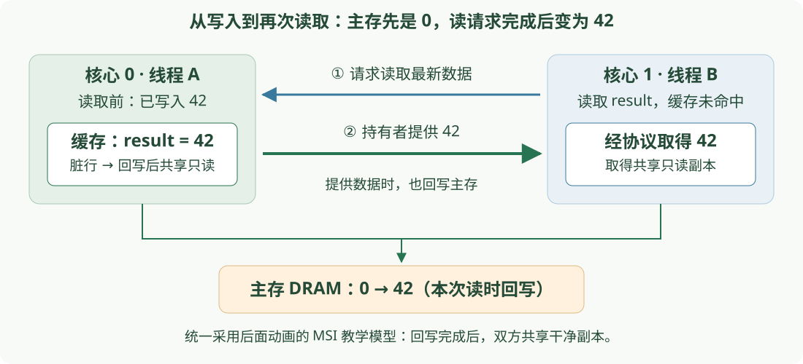
包含修改后数据、比主存更新的缓存行称为脏行（dirty）；“脏”不是错误，而是表示主存尚未更新。
核心 1 不能绕过最新副本，直接把主存里的旧值 0 当作这次读取的结果。 本讲统一采用同一个简化 MSI 模型：核心 0 提供42，同时完成脏行回写，使主存也变成42；随后两边持有共享只读副本。
“写入时不立即更新主存”不等于“主存永远不更新”。 此例的回写发生在另一核心请求读取时；后面的逐步动画也遵循这个过程。其他协议可以采用不同的回写安排。
到这里，我们走完了“共享读取 → 独占修改 → 另一核心重新取得数据”。下一页用 MSI 的三个状态，描述刚才看到的缓存行权限与副本变化。
MSI：三种稳定状态就能讲清基本过程
MSI 是实现缓存一致性（Coherence）的一种协议：多个核心通过规定的请求和状态变化，协调同一条缓存行的副本，让读取取得正确数据、修改取得独占权限。
名字来自三种状态的首字母：M = Modified（已修改）、S = Shared（共享）、I = Invalid（无效）。状态标记的是某个核心中的一条缓存行，不是整个核心，也不是单独一个变量。
对应刚才的过程：两边共享读取时是 S；核心0取得独占权限并写入42后是 M，另一边旧副本变为 I。
| 状态 | 本地是否可读 | 是否可直接写 | 本课简化协议中的含义 |
|---|---|---|---|
| I · Invalid | 否 | 否 | 即使数据位还在，也不是有效副本 |
| S · Shared | 是 | 否 | 干净副本；其他核心也可能有 S |
| M · Modified | 是 | 是 | 唯一有效拥有者，内存副本可能过期 |
协议不仅给状态起名字，还规定读或写发生时，怎样取得数据、改变权限。BusRd（Bus Read，总线读请求）请求可读副本；BusRdX（Bus Read Exclusive，总线独占读请求）请求独占写权限。M 上连续写可本地完成；别的核心想写时，原副本须失效。
这是稳定状态表。真实硬件还需要处理请求在途、确认未齐和并发冲突，不能只用三个枚举值就完成整个控制器。
只看一个变量：代码执行到哪里，副本怎样变化
把前面的 result 简记为 x，初始值为0。先看完整的四步访问序列，再点击“下一步”：橙色高亮表示刚执行的代码，下方显示执行后的缓存与主存。
访问伪代码（按编号顺序执行；T0、T1 分别在核心0、1上）
T0: read(x);读取 xT1: read(x);读取 xT0: write(x, 42);写入 xT1: read(x);读取 x
read / write 表示本演示的缓存访问，不是未同步的 C++ 并发程序。每一步展示一次请求完成后的状态；本 MSI 模型中，脏拥有者响应时回写主存。只显示 x 所在行，暂不引入其他变量。 I 表示副本不可用，不代表物理清零。
关键变化：T0 写42后，T1的副本失效；T1再读时重新取得42。 在本课MSI模型中，T0此时从M降为S，双方都保有只读副本。
再放入 y：写权限属于整条缓存行
前四步完全相同。这次假设 x、y位于同一条缓存行，初始都为0；接着让T1写 y=9，再让T0读x。方框里的 [x,y] 是同一行中的两个字，不是两条缓存行。
访问伪代码（按编号顺序执行；T0、T1 分别在核心0、1上）
T0: read(x);读取 xT1: read(x);读取 xT0: write(x, 42);写入 xT1: read(x);读取 xT1: write(y, 9);写入 yT0: read(x);读取 x
read / write 表示本演示的缓存访问，不是未同步的 C++ 并发程序。每一步展示一次请求完成后的状态；本 MSI 模型中，脏拥有者响应时回写主存。方框只画同一缓存行中的 x、y 两个字，不表示真实缓存行只有两个变量。 I 表示副本不可用，不代表物理清零。
第5步只改y，却让T0的整行副本失效；第6步只读x，也必须重新取得有效副本。 x的值仍是42，但原副本已经没有读取权限。“值没变”和“副本仍可用”不是同一回事。
完整回顾：写 y 之前，硬件已经做了什么
本页将第七页动画的完整六步展开成表，并未新增访问：其中操作①–④就是第六页的单变量过程；操作⑤是 T1: write(y,9)，操作⑥是 T0: read(x)。
表中①–⑥表示操作顺序，不是课件页码。 每行显示对应操作完成后的状态；数值仍是 x=42、y=9。
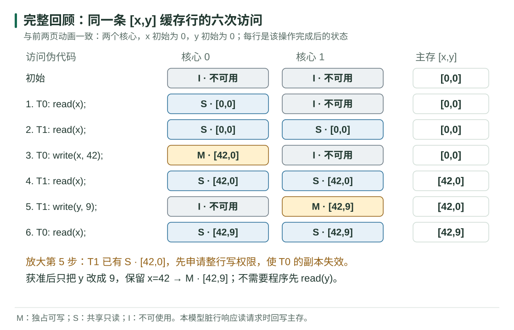
为什么 write(y,9) 前没有 read(y)？ 因为直接赋值不依赖y的旧值；如果是 y=y+1，才需要先读取旧值参与计算。
执行操作⑤ T1: write(y,9) 之前，T1已经持有最新的 S · [42,0]，缺的是写权限。硬件先协调取得整行独占权限，使T0的副本失效，然后只修改y，得到 M · [42,9]，保留x=42。程序不需要额外发起一次 read(y)；已有有效副本时，也不意味着必须重新搬运整行数据。
若写入时本地没有有效副本，本课的写分配模型会先取得最新缓存行及写权限，再修改目标位置。下一页将这类交接重复多次，看看不同变量为什么也可能互相拖慢。
各写各的变量，为什么还要互相等？
上一页只发生了一次“写y，让x的副本失效”。现在让两个核心轮流重复写：T0只更新自己的计数器x，T1只更新自己的计数器y，从0分别写到4。结果在两个线程都结束后读取。
变量没有共用，但如果它们挤在同一缓存行，每次换人写，都要重新争取这一行的写权限。把两个方案并排看，点击下一步或播放：
T0只写x：1 → 2 → 3 → 4；T1只写y：1 → 2 → 3 → 4。下面按T0、T1交替的顺序演示。
1. T0: x=12. T1: y=13. T0: x=24. T1: y=25. T0: x=36. T1: y=37. T0: x=48. T1: y=4方案A：x、y挤在同一行
主存初始为 x=0、y=0。累计回写 0 次。
方案B：x、y分到不同行
主存初始为 x=0、y=0。累计回写 0 次。
点击下一步，观察同一条代码在两种布局下的区别。
M表示独占可写，I表示副本不可用。简化MSI模型按八次访问逐一完成，不模拟真实调度或时间；一次申请并不等于固定耗时。方框只展示相关变量，真实缓存行还可包含其他字节。分行不表示必须放在不同内存芯片。本模型脏行失效前回写主存；演示结束未额外触发读取或驱逐，也不把线程结束当作强制写回主存。
这叫伪共享（false sharing）：程序并没有共同修改同一个变量，硬件却因为它们处在同一缓存行而反复协调。这是缓存一致性按整条缓存行管理副本带来的额外开销。动画中“不可用”不是数值丢失，而是旧副本不能再直接使用。
两种改进思路：少碰共享存储——先在各自局部累加，最后汇总；或者把频繁写入的变量隔到不同缓存行——减少互相失效，但会多占空间。最终是否更快还要看实际访问和硬件。
完整执行8次写入后，同一行需要8次写权限请求、7次副本失效；不同行只需首次共2次请求、0次失效。两边最新有效副本中的结果相同，都是x=4、y=4；减少的是权限交接，而不是计算次数。
动画中的 DRAM 显示主存副本，不一定是最新值：八步结束时，同一行方案的主存为 [4,3]，不同行方案仍为 [0,0]；最新结果保存在各自的M副本中。后续读取由一致性协议取得正确数据，不要求这八次写入都立即更新主存。
MESI 多出的 E，省掉哪一次通信
MESI 是 Modified / Exclusive / Shared / Invalid 的缩写；比 MSI 多了 Exclusive（独占且干净）状态。
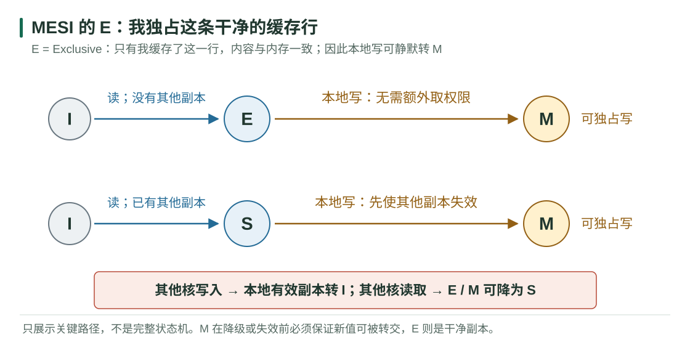
E · Exclusive 表示本地是唯一副本且干净。若读未命中时发现其他核心都没有这行，可以给 E；随后的本地写可静默 E→M。
Q01 · 讨论
一个线程先读 x，再写 x，期间没有其他核心访问。为什么 MSI 可能需要两次权限请求，而 MESI 可以只需要一次？
Q01
MSI 首次读获得 S，即使实际上只有自己缓存，也没有在状态里表达独占；写前还要取得独占权。MESI 的 E 记录唯一干净副本，写时无需再次通知别人。若其他核心先读走副本，E 已降为 S，之后写仍需升级。E 的收益依赖实际共享模式。
两个核心同时要写，谁先拿到权限？
前面的动画都是一个操作完成，再开始下一个。现在让两个请求撞在一起：T0、T1 分别在核心 0、1 上运行，起初都缓存了 x=0，状态都是 S（共享只读）；T0 想写 x=1，T1 同时想写 x=2。
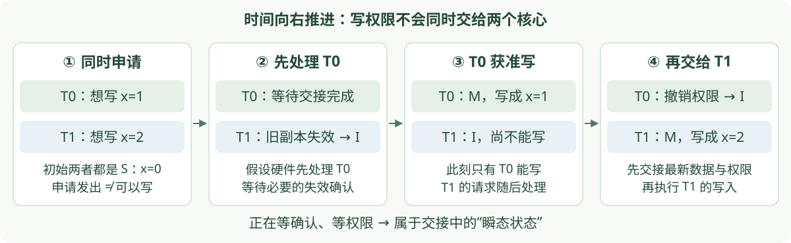
已经申请写权限，不等于已经拿到写权限。 图中假设 T0 的请求先获准；也可以是 T1 先获准，最终值取决于实际写入顺序。
“申请已发出，正在等失效确认”这样的中间阶段，叫作瞬态状态。M、S、I 描述前面看到的稳定状态，瞬态状态则帮助硬件记住一次交接尚未完成。
本页要点：同一条缓存行的写权限必须依次交接；交接完成后，获准的核心才能修改缓存行。 主线接下来从一个地址走向多个地址：写权限交接正确，是否就足以保证“先写结果，再发通知”？目录如何跟踪确认，放在深入阅读中。
从缓存一致性到内存顺序
结果还没看到，为什么先看到了“完成”？
前面讲的 MSI/MESI、写权限交接和伪共享，都围绕缓存一致性（Coherence）：同一个地址的副本如何协调。
现在进一步问：多个地址的读写，其他线程能看到怎样的顺序？这就进入内存一致性模型（Memory Consistency Model）。回到开场的例子：结果 result 和完成标志 ready 是两个不同的内存位置，初始分别为 0 和 false。
| 线程 A：算好结果，再通知 | 线程 B：收到通知，再取结果 |
|---|---|
① 写入 result = 42 | ③ 读到 ready == true |
② 写入 ready = true | ④ 读取 result，希望得到 42 |
我们的期待是：B 既然看到了“完成”，就应该能读到 42。 但仅靠前面讲的缓存一致性，还不能推出这个保证。
| 把两个位置分开看 | 把交接过程连起来看 |
|---|---|
result 从 0 更新为 42，它的各份缓存副本需要协调。 | B 看到了新的 ready 时，能否保证也读到新的 result？ |
ready 从 false 更新为 true，它的各份缓存副本也需要协调。 | 这是两个地址之间的先后关系，不是只检查某一个地址的副本。 |
| Coherence：缓存一致性，管同一个地址。 | Consistency：内存一致性模型，规定多个读写操作允许呈现怎样的顺序。 |
如果缺少所需的顺序保证，B 可能已经读到 ready=true，却仍读到 result=0；这不一定是某个地址的缓存一致性坏了，而是两个地址之间的交接没有同步好。 实际程序需用锁或 release/acquire（释放／获取）等同步方式，后面会逐步解释。
下一页先看一种直观的顺序规则：能否把所有操作排成一条时间线，同时保留每个线程原来的先后顺序？
顺序一致性：用一条时间线解释交接
继续用上一页的 result/ready。顺序一致性（SC，Sequential Consistency） 给出一种直观规则：把所有相关读写排成一条时间线，但不能颠倒任何一个线程内部的先后顺序。
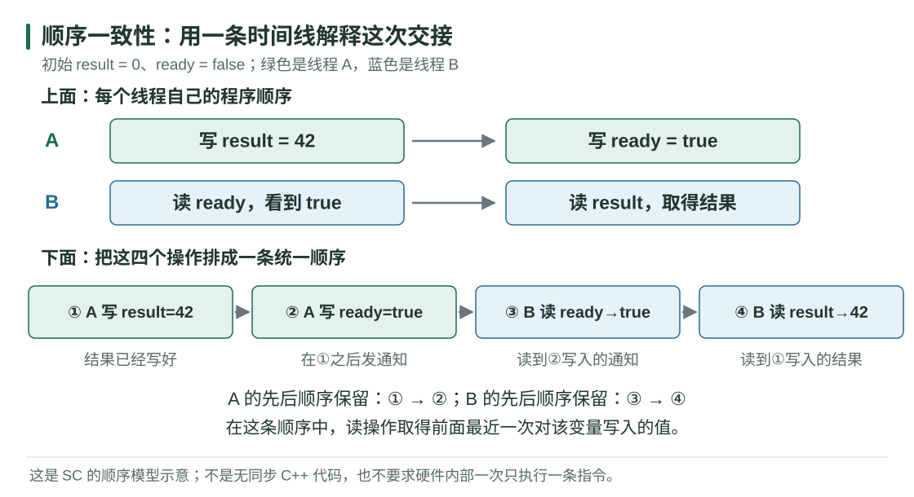
图上方是两段各自有先后的程序，下方是把它们合起来的一种合法顺序。B 读到 ready=true，说明这条时间线上已经发生了 A 的通知；A 写结果又在通知之前，所以 B 随后读到 result=42。 这里假设没有其他写入者。
SC 的两条规则：各线程内部的先后不变；每次读取得这条时间线上最近一次对该变量写入的值。 它约束可观察结果，不要求硬件内部真的逐条串行执行。
下一页换成两个线程各写一个变量、再读对方变量：用同样的规则，看看哪些读取结果是允许的。
Sequential consistency：一条保留线程顺序的交错
沿用上一页“排成一条时间线”的规则，换一个对称例子：共享变量只有 x、y，初始都是 0。
| 线程 | 先做什么 | 再做什么 | 读取结果叫什么 |
|---|---|---|---|
| T0 | 写 x=1 | 读取 y | r0：T0 读到的 y 值 |
| T1 | 写 y=1 | 读取 x | r1：T1 读到的 x 值 |
r0、r1 各自保存在对应线程中，不是新的共享变量。(r0,r1)=(0,1) 就是“T0 读到 0，T1 读到 1”；括号按线程编号排列，不按读取时间先后排列。
SC 允许两个线程穿插，但各自的“先写、后读”不能颠倒。先在动画中走一遍 (0,1)，再换其他结果：
每条轨道都必须先写、后读。下面把操作逐个放入统一时间线：
这是SC顺序模型中的变量值，不描绘缓存与DRAM；每次读取得时间线上最近一次对应写的值。六种排列都保留各线程先写后读，模型不要求硬件内部串行运行。
Q02 · 讨论
SC 允许 (r0,r1) 为 (0,1)、(1,0)、(1,1)，为什么唯独不允许 (0,0)？
Q02
若 r0=0，则读 y 要在写 y 之前；若 r1=0，则读 x 要在写 x 之前。加上各线程的先写后读，得到“写 x → 读 y → 写 y → 读 x → 写 x”的环，不可能排成单一顺序。可枚举六种保留两个线程内部顺序的交错验证，(1,0) 是允许的。
用反证法判断 0、0：先写出四条顺序边
对初值为 0 的两个原子变量，采用顺序一致操作：
T0: A = x.store(1); B = y.load() → r0
T1: C = y.store(1); D = x.load() → r1
若 r0=r1=0，SC 总顺序必须满足：程序顺序 A<B、C<D；读到旧值又要求 B<C、D<A。因此得到环：
不存在这样的全序，所以该结果被 SC 排除。这个推理依赖 SC 保证；不能把普通有竞争的 C++ 程序放进同一张合法交错表。
Store buffer：自己的写还在路上，就先读别处
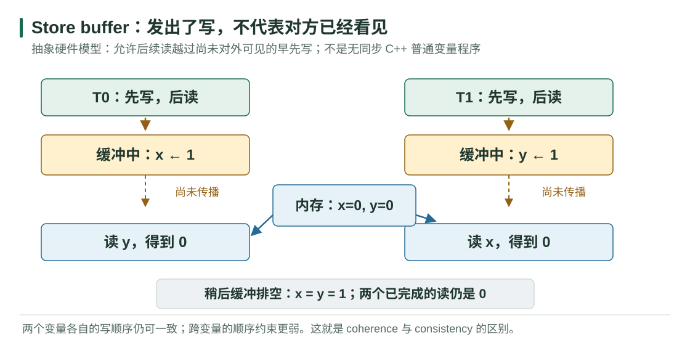
切换上一页模型。两个核心都先把自己的写放进本地 store buffer，然后读取另一个地址；对方的写尚未进入共享可见状态，所以两次读都得到 0。最后两个 buffer 才排空。
Q03 · 讨论
出现 (0,0) 是否意味着 x 或 y 的缓存一致性坏了？是不是“编译器把两行源码交换了”才会发生？
Q03
都不是。每个地址仍可保持一致的写入顺序；放宽的是对不同地址的写→读顺序。即使指令按源码顺序发出，缓冲与可见性的时机也足以产生这种结果。真实处理器还涉及本地转发、屏障和更复杂的排序规则；此模型只演示一种机制。
原子操作：管好一个标志，还不等于交接好结果
上一页看到了 (0,0)：写入已经发出，却还没有对另一个核心可见。现在从硬件转回程序：我们需要明确写出哪些保证，而不是猜硬件何时更新。
先认识原子操作（atomic operation）：对某个变量的一次操作，其他线程不会观察到“只完成了一部分”的状态。C++ 用 std::atomic<bool> 表示可被线程安全地原子读写的布尔标志。
| 我们需要什么 | 仅有原子性够不够 |
|---|---|
多个线程安全地读写 ready 这个标志 | 原子读写可以保障标志本身 |
B 看到 ready=true 后，安全读取另一处的 result | 还需要建立结果与通知之间的顺序保证 |
原子性管“一次操作”；内存顺序还要管“这些操作之间的关系”。 原子对象不会自动让一整段程序成为不可分割的操作。
C++ 默认的原子读写使用 顺序一致性（seq_cst），是较强且便于推理的起点。下一页学习一种针对“交出结果”的同步配对：release / acquire。
一次交接：写好结果，再发布通知
仍用同一块白板：普通变量 result 存结果，原子标志 ready 初始为 false。A 写，B 读；这一次交接结束前，A 不再覆盖结果。
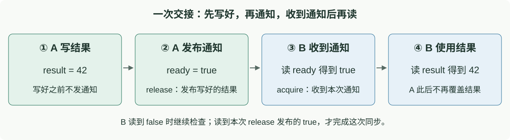
- release（释放）：A 写好结果后，用这个方式发布
ready=true。 - acquire（获取）：B 用这个方式检查 ready；读到 A 这次发布的 true 后，再使用结果。
这两个操作通过同一次通知配对，建立“A 写好 result → B 读取 result”的保证。不是所有内存都必须立刻写回 DRAM。
B 如果读到 false，就继续检查；负责等待的是循环，不是 acquire 这个词本身。 下一页把图中的四步对应到代码。
把一次交接的四步对应到代码
store 表示原子写入，load 表示原子读取。两个线程启动前，先创建共享对象：
int result = 0;
std::atomic<bool> ready{false};
| A 执行 | B 执行 |
|---|---|
① result = 42; | ③ 循环读取 ready，直到读到 true |
② release 写入 ready=true | ④ use(result); |
// 线程 A：只发布一次，之后不再修改 result
result = 42;
ready.store(true, std::memory_order_release);
// 线程 B：与 A 并发运行
while (!ready.load(std::memory_order_acquire)) {}
use(result); // 收到这次通知后，安全读取 42
为什么 result 可以是普通变量？ 因为这次同步已经把 A 的写与 B 的读排好了先后，二者没有无序冲突。把 ready 换成普通 bool，或只保留原子性而去掉必要顺序，都不能照搬这个证明。
为什么不能直接用普通 bool？ A 写 ready、B 在 while (!ready) {} 中读它，如果没有同步，就构成数据竞争（data race）：不同线程访问同一位置，至少一个在写，且没有同步保证先后。C++ 对这种程序不再保证行为；例如编译器可能复用先前读到的 false，让 B 一直等下去。即使硬件能一次读写 bool，也不能代替语言层的同步。
这里是线程各自执行的代码片段，初始化先于线程启动；不是把两段放在同一线程顺序执行。
白板还要写下一份：必须先等对方读完
现在 A 不只交出 42，还要继续交出 99。两份结果都写在同一个 result 位置，旧结果会被覆盖。
把 result 想成一块只能写一个数的白板。A 想依次交出 42、99，B 应该把这两个数各取走一次。如果 A 不等 B 取走，就可能出现下面的交接错误：
| 顺序 | A 在做什么 | B 在做什么 | 白板上的数 |
|---|---|---|---|
| ① | 写下 42，通知“可以读了” | 还没看到通知 | 42 |
| ② | 暂时没有新动作 | 看到了通知，但还没抄下数字 | 42 |
| ③ | 没等 B，擦掉 42，写下 99 | 还没抄下数字 | 99 |
| ④ | — | 这时才看白板，只剩 99 | 99：42 已经被覆盖 |
“B 看到了通知”不等于“B 已经取走结果”。 表格用白板说明漏掉 42 的原因；在普通 C++ 共享变量中，缺少同步的再次写入还可能与读取构成数据竞争，不能保证实际结果只会是 99。
修正只需补上一个关键条件：B 抄下 42 后，回复“我读完了”；A 收到回复后，才允许写 99。
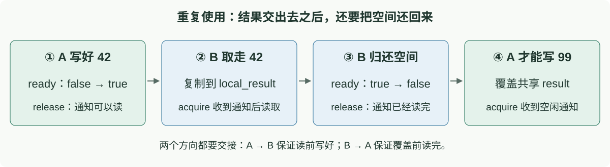
读之前，等对方写好；覆盖之前，等对方读完。 接下来仍用 ready：true 表示有结果待取，false 表示这个位置可以写。
从42到99：标志同时传递使用权
限定一个写线程 A、一个读线程 B。初始 ready=false，下面走完一次往返，再开始下一份：
| 顺序 | 谁做什么 | ready | 此时谁可以访问 result |
|---|---|---|---|
| ① | A 确认空闲，写入 42 | false | A 写，B 等待 |
| ② | A 用 release 发布“写好了” | true | A 停止修改 |
| ③ | B 用 acquire 读到 true，把 42 复制到自己的变量 | true | B 读，A 等待 |
| ④ | B 用 release 发布“读完了，可以覆盖” | false | B 不再读取共享 result |
| ⑤ | A 用 acquire 收到空闲通知，写入 99 | false | A 写，B 等待下一次通知 |
同一个布尔标志承担两个方向的通知：true 把结果交给 B；false 把可写空间还给 A。 每个线程必须遵守等待条件，不能因为自己“上次已经发过通知”就跳过等待。
B 复制完 42 后，可以继续使用自己的局部副本；A 覆盖共享 result 不会改变这个局部副本。
重复交接的代码：两边都要等，也都要通知
共享对象仍是普通 result 和原子 ready=false，在线程启动前初始化。下面两段分别由 A、B 并发执行：约定交接两次，依次传递 42、99，完成两轮后各自结束。
// 线程 A：依次交出 42、99
const int values[2] = {42, 99};
for (int i = 0; i < 2; ++i) {
while (ready.load(std::memory_order_acquire)) {}
result = values[i]; // 等到空闲，才写这一轮的结果
ready.store(true, std::memory_order_release);
}
// 线程 B：取走两份结果
for (int i = 0; i < 2; ++i) {
while (!ready.load(std::memory_order_acquire)) {}
auto local_result = result; // 先复制到自己手里
ready.store(false, std::memory_order_release);
use(local_result); // 依次使用 42、99
}
外层 for 决定交接几次，内层 while 等待这一轮轮到自己。 两边的 i 是各自的局部变量；真正协调两边进度的是 ready。主线程等待 A、B 都结束后，再销毁共享对象。
| 交接方向 | 谁发布 release | 谁接收 acquire | 保护什么 |
|---|---|---|---|
| A → B：写好了 | A 写 true | B 读到 true | B 读之前，A 已写好 |
| B → A：读完了 | B 写 false | A 读到 false | A 覆盖之前，B 已读完 |
先说清要等什么，再选择同步工具
前面的 ready 解决的是“A 与 B 交接一份数据”。换一个协作要求，工具也要换：
| 具体需要 | 对应工具 | 不要误以为 |
|---|---|---|
| A 写好结果，B 收到通知后读取 | 原子标志配合 release / acquire | 一次 acquire 读取就会自动等到 true |
| 全班各算一部分，所有人完成后进入下一阶段 | 屏障（barrier） | 屏障能补救此前同时写同一变量的冲突 |
| 多个人都想修改同一份账本，每次只能进一个人 | 互斥锁（mutex） | 拿锁等于所有线程都已到齐 |
先明确需要“通知交接”“集体到齐”还是“独占访问”，再选工具。 后面讲锁时，重点转向第三种需求。
原子指令到锁实现
exchange：写入占用标志，同时拿回旧值
前面只有一个 A 写、一个 B 读。现在多个线程都想使用同一份数据，必须先决定：谁获得使用权？ 只读到“空闲”还不够，因为两个人可能同时读到空闲。
原子变量 occupied 中，0 表示空闲，1 表示已占用。exchange(1) 的功能只有一句话：
把 occupied 写成 1，同时返回修改前的旧值；整个过程是一个原子操作。
// 共享变量：在线程启动前初始化
std::atomic<int> occupied{0};
// 每个线程各自尝试一次
int previous = occupied.exchange(1); // 写入 1，拿回旧值
if (previous == 0) {
// 原来空闲：我抢到了
} else {
// 原来已占用：我没抢到，不能进入
}
previous 是每个线程自己的局部变量，保存这次 exchange 返回的旧值。
| 假设 T0 先执行 | occupied 的变化 | 返回的 previous | 谁能进入 |
|---|---|---|---|
| T0 执行 exchange(1) | 0 → 1 | 0 | T0 抢占成功 |
| T1 随后执行 exchange(1) | 1 → 1 | 1 | T1 抢占失败 |
在没有释放的这次竞争中，只有一个线程能拿到旧值 0。注意：失败的线程也写入了 1，只是标志的数值没有改变。
下一页补上两件事就得到最简单的锁：没抢到就继续尝试；用完后把标志归还为空闲。
Q04 · 讨论
如果先 load 读旧值，再单独 store 写入 1，为什么不能保证只有一个线程进入？
Q04
两个线程可能都先读到0，再分别写1，都以为抢占成功。exchange将取旧值和写入合成一个原子操作，只有第一个能拿到0，其余拿到1。这里假设中间没有释放。
TAS 自旋锁：占住一个位，再交接受保护数据
沿用上一页的 occupied：0 是空闲，1 是占用。测试并设置（TAS，Test-and-Set）锁只补上失败后重复尝试、用完后释放。不断检查、尝试而不睡眠的等待方式叫作自旋。
class TasLock {
std::atomic<int> occupied{0};
public:
void lock() {
while (occupied.exchange(1) == 1) {
// 旧值是1：没抢到，继续尝试
}
// 旧值是0：抢到了，lock()返回
}
void unlock() {
occupied.store(0);
}
};
exchange 仍然返回旧值：返回0才退出循环，返回1就继续等待。 这里省略内存顺序参数，统一使用默认的顺序一致性（seq_cst），已经包含锁所需的数据交接保证。只有拿到锁的线程才能解锁。
成本线索：锁标志已是1，失败者仍反复执行写入1 的读改写操作（RMW，Read-Modify-Write），可能反复争夺缓存行独占权限。数值没变，不代表没有协议代价。
拿到锁的那个瞬间，保护数据怎样跟着交接
假定 T0 已持锁，先写 result=42，再用 occupied.store(0) 解锁；T1 的 occupied.exchange(1) 返回0，抢锁成功，随后读取 result。这里假定中间没有其他线程修改 result。
互斥与数据交接是锁的两项职责。 前者保证一次只有一个线程使用数据；后者保证下一个持锁者能接着使用前一个持锁者写好的结果。这里的默认原子操作已经提供所需的同步，不需要再手写第二个参数。
为什么不会先解锁、结果却还没写好？ 其实这里省略了参数：默认的 store(0) 包含 release 保证，发布解锁前的修改；成功拿锁的 exchange(1) 包含 acquire 保证，接收这些修改。因此下一位持锁者能正确读取 result。
这里保证的是结果能被下一位持锁者正确读取，不是必须先写回 DRAM。最新的42可以仍在缓存里，由缓存一致性机制提供给读取者。
失败的 TAS，为什么仍然让互连忙起来
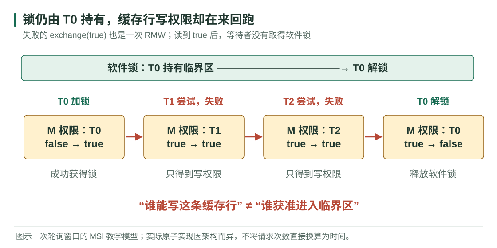
线程 1 持有软件锁时，线程 2、3 仍可对锁字执行失败的 exchange(1)。数值没有改变，RMW 却可能反复请求写权限，让缓存行在核间转移。
缓存行的 M 拥有者，不等于临界区的持锁者。 前者可以随着失败的竞争者变化，后者直到正确解锁才交接。
TTAS：锁忙时先读，空闲时再争取
先测试、再测试并设置（TTAS，Test-and-Test-and-Set）：锁忙时只读取标志；看到空闲后，再用上一页的 exchange 抢占。
下面替换 TAS 的 lock()；共享成员仍为 std::atomic<int> occupied{0}，解锁仍用 occupied.store(0)。
void lock() {
while (true) {
// 第一步：别人占用时，只读着等，不反复写1
while (occupied.load() == 1) {}
// 第二步：看见空闲后，真正尝试抢占
int previous = occupied.exchange(1);
if (previous == 0) return; // 抢到了
// 被别人抢先：回到外层循环，重新等空闲
}
}
// unlock(): occupied.store(0);
load() 只查看标志，不会占住它。看到0不代表已经拿到锁；只有 exchange 返回0，才取得使用权。 和 TAS 一样，这里所有原子操作都使用默认内存顺序。
Q05 · 讨论
为什么 load() 看到 occupied=0 后，还要再执行一次 exchange(1)，不能直接进入？
Q05
轮询只提示值得尝试，不会占住空位。多个等待者可以同时看见0，但随后exchange按原子顺序执行，只有拿到旧值0的胜者能够进入；其他线程拿到1，回到等待循环。代码使用默认seq_cst，成功抢锁与先前的解锁提供数据交接保证。
等待者把缓存行拿走了，但并没有拿到锁
先不看总数。点击“下一步”，观察谁在执行、谁仍持有软件锁、本步是否新增请求。尤其比较第一轮读取与第二轮读取的区别：
T0先拿锁，T1、T2交替检查4轮，最后T0解锁。两边执行相同的等待顺序，逐步比较缓存行和请求计数。
初始：occupied=0，缓存都没有有效副本
TAS：反复 exchange(1)
TTAS：锁忙时只 load()
M：缓存行的独占写权限；S：共享只读副本；I：副本不可用。使用简化MSI模型，只统计一致性请求，非实际耗时；不含解锁后新一轮抢占。动画步骤表示一次访问完成，不表示处理器周期。
Ticket lock：先取号，再按号码进入
TTAS让等待者少写一些，但解锁时大家仍会一起抢。Ticket lock（票号锁）改成像窗口办事：先取一个号码，叫到自己再进入。
只需要两个共享计数器，初始都为0：
| 名字 | 含义 |
|---|---|
next_ticket | 下一个可以发出的号码 |
now_serving | 当前轮到的号码 |
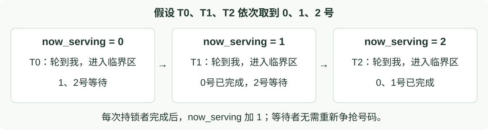
怎么保证不会发出重复号码？ 使用原子操作 fetch_add(1)：把计数器加1，同时返回加1之前的旧值。起初为0，三个线程依次取到0、1、2，取完后 next_ticket 为3。
// 共享计数器：在线程启动前初始化
std::atomic<unsigned> next_ticket{0}, now_serving{0};
// 每个线程执行；my_ticket 是自己的局部变量
unsigned my_ticket = next_ticket.fetch_add(1); // 取号
while (now_serving.load() != my_ticket) {} // 等叫号
// 临界区：现在只有轮到的线程可以访问受保护数据
now_serving.fetch_add(1); // 用完后叫下一个号，即解锁
按成功取号的顺序进入，不再每次解锁后重新比谁抢得快。 代码沿用默认内存顺序；这里只有持锁者能推进 now_serving。
代价也很直观：所有人仍在读同一个叫号牌、占用CPU等待；如果轮到1号时，1号线程被暂停，2号即使准备好了也不能越过。有序不等于更快，也不保证等待时间很短。
exchange 与 CAS：无条件写入，还是满足条件才更新？
前面用 exchange 抢锁，它会写入1，再用返回的旧值判断是否抢到。现在认识另一种原子操作：比较交换（CAS，Compare-and-Swap）。
| 操作 | 做什么 |
|---|---|
| exchange：交换 | 不管当前值是多少，都写入新值，并返回旧值 |
| CAS：比较交换 | 当前值仍等于期望值，才写入新值；否则不修改，报告失败 |
例子：大家共同维护一个最小值，初始是10。 T0发现候选值7，准备更新，但在它真正写入之前，T1先找到了5：
| 步骤 | 发生了什么 | 共享最小值 |
|---|---|---|
| ① | T0读到10，认为“7更小，可以更新” | 10 |
| ② | T1先把最小值更新为5 | 5 |
| ③ 错误做法 | T0不再检查，直接exchange写入7 | 7：把更小的5覆盖了 |
| ③ 正确做法 | T0用CAS：“只有当前仍是10，才改成7” | 仍为5：不符合条件，拒绝更新 |
表中最后两行是同一个时刻的两种替代做法，不是先写7再执行CAS。CAS把比较当前值与条件更新合成一个原子操作，中间不能插入另一个线程的修改。
T0更新失败后，重新检查最新值5：自己的7并不更小，直接放弃即可。依据旧值做决定，真正更新时要确认这个依据仍然成立。
CAS 的优势：条件已经变了，就不覆盖别人的修改。 exchange 也会返回旧值，但在这个例子里，等它告诉你“原来是5”时，5已经被写成7；CAS则在修改之前完成检查。
| 需要解决的问题 | 更直接的选择 |
|---|---|
| 简单抢锁：设为占用，并知道之前是否空闲 | exchange 足够，返回旧值0才算抢到 |
| 根据旧状态作决定，不能覆盖别人刚做的更新 | CAS：旧状态仍匹配才提交修改 |
CAS 的主要优势是支持条件更新，保证这类操作的正确性，不是保证更快。失败的 CAS 虽然不修改目标值，仍可能产生缓存和通信开销。
原子操作为什么不会被其他线程插入？
前面说 exchange(1) 把“取得旧值、写入1”合成一个原子操作。不是函数名字让它不可分割，而是编译器和硬件共同落实这个保证。
沿用锁标志 occupied，初始为0。T0、T1同时来抢，假设硬件先处理T0：
| 完整的原子操作 | 取得旧值 | 写入新值 | 返回后的判断 |
|---|---|---|---|
| ① T0：exchange(1) | 0 | 1 | 返回0，T0抢到锁 |
| ② T1：exchange(1) | 1 | 1 | 返回1，T1没有抢到 |
表中“取得旧值”和“写入新值”是为了说明而拆开的两列，其他线程不能插到这两步中间。 T1不能趁T0已经取走0、却还没写入1时，也取走同一个0。若T1先执行，则它成功，T0失败。
对同一个地址上冲突的原子更新，硬件协调它们的先后，使每次更新表现为一个完整操作。普通的“先 load、再 store”是两个操作，中间仍可插入其他线程的访问。
这也联系到前面的缓存一致性：硬件通常需要协调目标缓存行的访问权限。但取得缓存行的独占写权限，不会让任意一段普通代码自动变成原子操作。 单个原子操作的保证来自对应的实现；保护多步修改，则需要所有参与者遵守同一把锁等同步规则。
锁迟迟拿不到，要一直等着试吗？
前面的 TAS、TTAS 都在循环检查锁。TTAS减少了反复写入，但只要还在循环，等待线程仍在占用CPU执行指令。
假设 A 拿着锁，B 正在等：
| A 在做什么 | B 可以怎样等待 | 为什么 |
|---|---|---|
| 只修改几个数，很快就会解锁 | 短暂自旋：继续检查锁 | 可能很快拿到锁，省去睡眠和唤醒的开销 |
| A 持锁期间被操作系统暂停调度，一时不能继续运行 | 阻塞等待：暂时睡眠 | B不用一直空转，让CPU去执行其他可运行线程 |
自旋是在等的时候继续执行；阻塞是暂时让出CPU，等合适时机再运行。 睡眠和唤醒也有调度开销，所以并不是所有等待都应该立刻睡眠。
真实的 互斥锁（mutex） 可以结合两种方式：
先尝试拿锁 → 没拿到时可能短暂自旋 → 仍拿不到则阻塞等待 → 被唤醒后继续尝试。
被唤醒不等于已经拿到锁。 必须成功取得锁，才能进入临界区。
本页只记住这个取舍：等待很短，自旋可能划算；等待较长，阻塞通常更合适。 具体还取决于竞争程度与CPU调度；实际程序通常优先使用成熟的mutex实现。
四种锁怎样选：少争写、有次序，还是少占CPU？
回顾已经讲过的四种方式：它们都要保证互斥，差别主要在“没拿到锁时怎么办”。
| 方式 | 等待时做什么 | 改善了什么 | 仍有什么代价 |
|---|---|---|---|
| TAS | 不断exchange写1，尝试抢锁 | 实现简单 | 等待者反复争缓存行写权限，占用CPU |
| TTAS | 先读着等，空闲后才exchange | 比TAS少了持锁期间的反复写入 | 解锁时仍一起抢，仍占用CPU |
| Ticket lock | 取号后，等叫到自己的号码 | 按取号顺序进入 | 仍忙等；前面的线程不运行，后面不能越过 |
| 阻塞式mutex | 拿不到时可以睡眠，唤醒后再尝试 | 减少长时间等待占用的CPU | 睡眠、唤醒和调度有开销 |
TAS → TTAS 是减少无效争写；Ticket 是让等待有次序；阻塞是让长等待少占CPU。 这不是速度排行榜。
什么时候考虑 Ticket？ 多个线程持续争锁、重视按取号顺序服务、临界区较短，而且各线程通常能及时获得CPU时，可以考虑它。相比TTAS，后来取号的线程不能插队，避免等待者在每轮重新争抢中反复输掉；但如果轮到的线程被暂停，后面的人也只能等。
竞争不多、主要追求简单和低开销时，TTAS可能更合适；等待较长或线程容易被暂停时，通常考虑阻塞式mutex。Ticket改善的是等待次序，不保证吞吐量更高或等待时间更短。
真实mutex还可能先短暂自旋，再阻塞。
复杂对象的正确性与进展
两次原子操作，不等于一次完整转账
前面讲了锁怎样实现，现在看锁应该保护哪些操作。两个账户各有100元，总额200元；从 A 转20元给 B，要分两步：
| 时刻 | 执行的操作 | A 的余额 | B 的余额 | 合计 |
|---|---|---|---|---|
| 转账前 | 尚未修改 | 100 | 100 | 200 |
| 中间状态 | A 减20，B 还没加 | 80 | 100 | 180 |
| 转账后 | B 加20，转账完成 | 80 | 120 | 200 |
如果另一个线程在中间查看，就可能报告“总额180元”。即使减20、加20各自都是原子操作，也不能阻止查看线程插在两步之间。
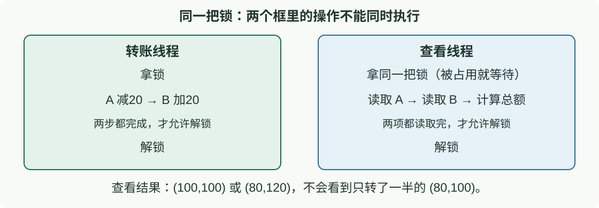
写的人和读的人，都要遵守同一把锁。 转账不能减完钱就解锁、加钱时再拿锁；查看也不能绕过锁，或把两次余额读取拆到两次拿锁中。
这样，查看线程只会看到转账前的 (100,100) 或转账后的 (80,120)，总额都是200元。这里假设只有这笔转账，没有其他资金流入流出。
这种希望在完整操作结束后保持成立的规则——这里是 A+B=200——叫作不变量。锁允许内部暂时出现中间状态，但不让其他遵守同一把锁的线程看到它。
事务内存：把一次转账作为整体提交
回到 A、B 各有100元、从 A 转20元给 B 的例子。除了先拿锁再修改，还有一种组织方式：事务内存（Transactional Memory），把“减20、加20”包成一个整体。
| 用锁组织 | 用内存事务组织 |
|---|---|
| 先拿同一把锁，取得独占访问资格 | 在事务系统管理下尝试执行整笔转账 |
| 完成 A减20、B加20，再解锁 | 满足提交条件，整笔修改一起生效；否则中止本次尝试 |
| 其他遵守该锁的线程不能插入中途 | 其他遵守事务协议的操作不能看到半笔已提交的转账 |
什么情况下会中止？ 例如 T0 准备从 A 转20元给 B，但另一个事务 T1 先从 A 转30元到第三个账户 C。初始 A=100、B=100、C=0：
| 步骤 | 发生了什么 | 已提交余额（A，B，C） |
|---|---|---|
| ① | T0读到 A=100、B=100，准备改成80、120，尚未提交 | 100，100，0 |
| ② | T1先提交：A减30、C加30 | 70，100，30 |
| ③ | T0提交时发现依据的 A=100 已过期，中止本次尝试 | 仍为70，100，30 |
| ④ | T0重新读取当前余额，再完成 A转20给B并提交 | 50，120，30 |
如果让旧的 T0 直接写入 A=80，就会覆盖 T1 已完成的扣款。因此这里丢弃 T0 本次准备的80、120，再基于最新余额重新计算。
中止本次尝试，不是把全部账户恢复到初始值。 T1已提交的30元转账保留；T0重试从 A=70 开始，而不是从100开始。此例展示一种冲突处理顺序，具体系统也可能更早发现冲突。
记住概念即可：多步修改，要么整体提交，要么本次不生效。 这不等于断电后数据仍能恢复，也不是 CUDA 中可以直接套用的通用同步工具；事务系统仍要负责冲突协调，程序也要划对操作边界。
死锁：各占一段路，谁也不肯先退出
前两页讨论怎样让一次转账完整生效。现在换一个问题：有了同步规则，线程是否一定能继续完成工作？
把线程想成卡车，锁想成路段的通行权。窄路分成 A、B 两段，每段只容一辆车；车要取得下一段的通行权，才释放当前路段。两辆车从相反方向驶入，而且都不主动后退：
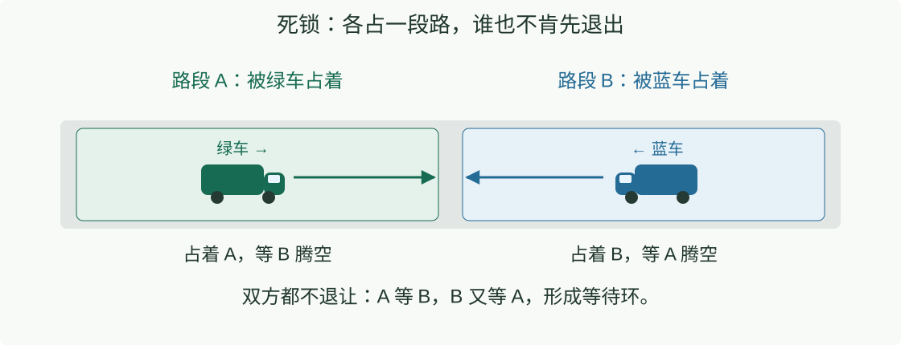
绿车说“你先腾出 B，我才能往前”；蓝车说“你先腾出 A，我才能往前”。双方都保持占用，双方都等不到条件成立。 这就是死锁（deadlock）。
对应程序：T0 拿着锁 A 等锁 B；T1 拿着锁 B 等锁 A。即使每一把锁本身实现正确，组合起来仍会卡住。
一种预防办法：所有线程按同一顺序拿锁，例如先 A 后 B。 没拿到 A 的线程不去占 B，就不会形成这个等待环。
活锁：不断礼让，却总是同时重试
为了避免刚才的死锁，两辆卡车改成“看见对方就退，让对方先走”。但假如双方每次都做出一样的反应：
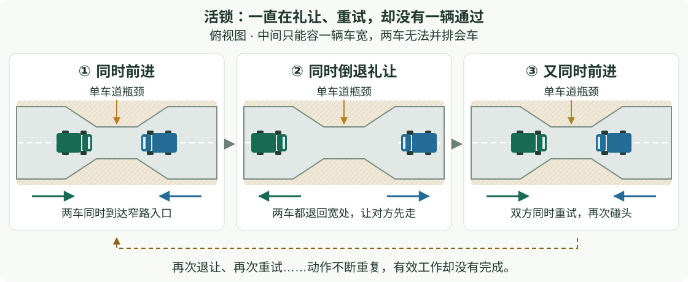
同时进入 → 同时退让 → 同时再试 → 再次退让。 两辆车没有一直占着路，也没有停止动作，却谁都没通过。这就是活锁（livelock）。
对应程序：两个线程发生冲突后都释放资源、撤销本次操作，再同时重试；冲突反复出现，业务始终没完成。
改进方向是打破双方同步重试：例如规定固定优先级，或让双方随机等待不同时间再试。随机退避能降低再次碰撞的机会，但不能当作绝对的进展保证。
饥饿：别人一直能走，只有我总轮不到
这次不是两车互相挡住：主路上的卡车不断通过，规则却总让支路车等待。如果主路车辆接连到来，支路绿车就可能一直进不去：
整体有车辆通过，但某一辆长期轮不到。 这就是饥饿（starvation）；它与“大家都过不去”的死锁、活锁不同。
对应程序：TAS、TTAS解锁后重新争抢，某个线程可能反复输给别人。这里没有先来先得的保证，不代表每次运行都会发生饥饿。
可以通过排队或限制连续插队改善公平性。例如前面的 Ticket lock 按取号顺序服务；但它仍依赖前序线程能够运行并释放锁，不能保证每个人很快完成。
三者对照：死锁是互相等；活锁是一直动却没完成；饥饿是别人完成了，我却长期轮不到。
把契约带进 CUDA
把结果交给谁？GPU上的同步也有范围
现在把前面学过的交接、屏障和等待问题，放到GPU场景里再看一次。 原则没有变：读之前等写好，等待时确保对方能运行；这里还要明确协作范围与执行资源。
还是前面的例子：A 写 result、再发 ready，B 收到通知后读取结果。到了GPU上，先确认：A、B 分别属于哪个线程块？同步范围是否覆盖双方？
CUDA 把线程组织成线程块（block），可以先把它理解成一个协作小组；一张 GPU 上可以运行许多这样的组。下面先认识位置，不需要记 API。
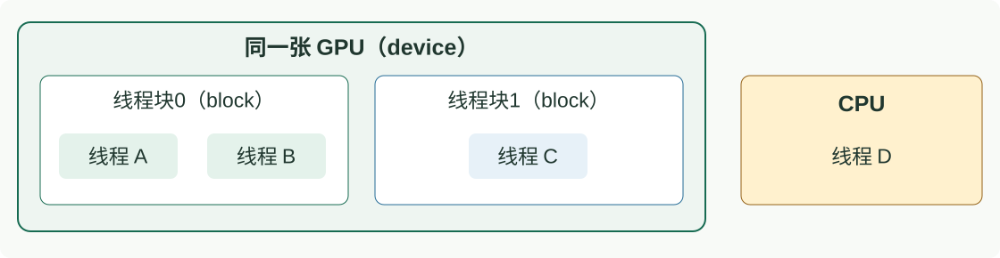
| result/ready 由谁交给谁 | 原子同步需要覆盖谁 |
|---|---|
| 线程块0里的 A → 同块里的 B | block 范围：覆盖这一组线程 |
| 线程块0里的 A → 同一GPU上线程块1里的 C | device 范围：覆盖同一张GPU的线程 |
| GPU线程 A → CPU线程 D | system 范围：还需覆盖CPU；须满足共享内存与平台支持条件 |
这就是线程作用域（thread scope）：一次原子同步承诺对哪些参与者有效。
例如 A 要通知另一线程块里的 C，却只使用 block 范围的原子操作，它的保证没有覆盖 C，不能据此证明交接正确。即使 C 使用更大范围，也不能替 A 补齐保证；两边都要覆盖实际通信双方。
本页只记住：先找出谁给谁交结果，再选择能覆盖双方的同步范围。 范围选对以后，仍需前面讲的正确发布与接收；具体CUDA写法留到后续课程。
Block 内协作：无效元素也要守住阶段边界
回想第三讲的温度更新：各线程先完成当前阶段，在屏障处等大家到齐，再进入下一阶段。这里沿用同样的思想：同一个线程块内，各自写好数据 → 块内屏障 → 再读取大家写好的数据。
下面只演示“合作装入 → 同步 → 读取”，不把串行求和当作高性能 reduction。约定一维 block 恰好 256 个线程，partial 与 x 不重叠且空间足够。
__global__ void block_sum(const float* x, float* partial, int n) {
__shared__ float tile[256];
int t = threadIdx.x;
int i = blockIdx.x * blockDim.x + t;
tile[t] = (i < n) ? x[i] : 0.0f;
__syncthreads();
if (t == 0) {
float sum = 0;
for (int j = 0; j < 256; ++j) sum += tile[j];
partial[blockIdx.x] = sum;
}
}
所有线程先写各自的槽，然后参与 block 屏障。第 0 号线程读取的 shared 数据已经由本 block 写完；尾部无效元素用加法单位元 0 填充。
这里等的是同一个块内的线程，不能直接扩大成所有线程块互相等待。 下一页看跨块照搬“原地等大家到齐”，为什么可能卡住。
Q06 · 讨论
把屏障写成 if (i < n) __syncthreads();，为什么最后一个不满的 block 有问题？
Q06
屏障参与条件在同一 block 内不一致，部分仍在执行的线程不会走到该屏障，不符合这种 block 同步的要求。输入有效性决定是否读 x，不应随意决定是否参与协作；让全部线程写好自己的槽并走过统一屏障，之后再按职责读取。
算完还占着位置等，块2就进不来
用一个具体任务：三组数分别由块0、块1、块2计算，各组的和是 10、20、30，最后要汇总为 60。假设本次资源最多同时容纳两个块，块0、块1先运行，块2排队。
错误设计是：每个块算完自己的部分后，仍留在任务里循环等待，直到所有块都算完。
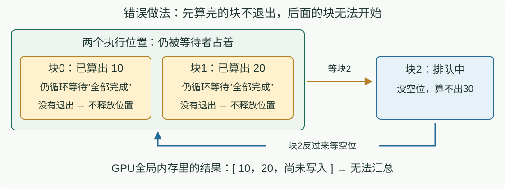
块0、块1虽然已经写好了10和20，但循环还在执行，块没有结束，资源也没有释放。块2等不到位置，就算不出30；先运行的两个块又因此永远等不到“全部完成”。
这与前面的卡车死锁相似：卡车占着路段等对方让路；这里块0、1占着执行位置等块2的结果，块2反过来等它们释放位置。
这不是通知写得不对，而是等待者占住了生产者需要的资源。 普通GPU任务中的块可能分批运行，不能假设排队块一定会在这种等待中获得运行机会。
下一页只改一件事：各块保存自己的结果后就退出，不在这里等待汇总。
保存后退出，让后面的块运行；最后再汇总
回到第三讲的分阶段计算：先让各部分结果全部完成，再汇总。这里不能让所有块占着资源互等，就把阶段边界放到两次GPU任务之间。
仍然是三个块、两个执行位置。把工作拆成两次 kernel（GPU计算任务）：第一次只计算各组的和，第二次才汇总。
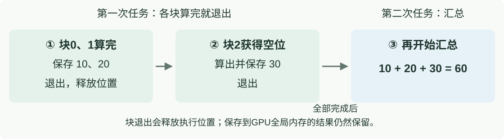
- 先运行的块保存结果就退出。 块0写下10、块1写下20，不再留在原地等别人，执行位置随之释放。
- 块2获得空位，算出30后也退出。 三个结果都保存好，第一次任务才算全部完成。
- 再运行汇总任务。 读取10、20、30，计算
10 + 20 + 30 = 60。
块退出，结果不会跟着消失： 这里把各组结果写在预先分配的 GPU全局内存 中，保留到汇总结束；不是放在随块结束而失效的块内共享内存里。
把两次任务按顺序提交到同一条 stream（执行队列）：队列保证第一项全部完成后，第二项才执行。CPU可以先把两项都提交，不需要每个块自己忙等。
区别：上一页是“占着位置等别人”；这一页是“保存后退出，全部完成后再汇总”。
本讲总结
本讲总结：数据要交得对，线程也要走得动
从开场“一个线程算出42，另一个线程使用它”出发，本讲解决了这些问题：
| 问题 | 学到的关键点 | 对应例子 |
|---|---|---|
| 同一数据有多份缓存，怎样协调？ | Coherence（缓存一致性） 管副本与写权限 | MSI/MESI；旧副本失效；最新值不一定在DRAM |
| 看到通知，是否就能读取结果？ | Consistency（内存一致性模型） 约束读写顺序；程序用同步建立交接保证 | 写result → release通知 → acquire收到 → 读result |
| 多个人都想修改，谁能进入？ | 原子抢占与锁 保证排他；锁还负责前后使用者的数据交接 | exchange返回旧值0才抢到；转账和查看拿同一把锁 |
| 没拿到锁，怎样等待？ | 减少争写、按序排队、阻塞等待，是不同取舍 | TAS → TTAS；Ticket；阻塞式mutex |
| 有同步，是否一定能完成？ | 还要避免等待环、无效重试和长期失去服务机会 | 死锁、活锁、饥饿；块2因没有执行资源而无法启动 |
最容易混淆的三组区别：
- 缓存行可写 ≠ 软件锁已拿到。 失败的exchange也可能取得缓存行写权限。
- 单个操作原子 ≠ 多步业务完整。 减钱与加钱要作为整笔转账保护；事务则提供整体提交的思路。
- 通知顺序正确 ≠ 对方一定能运行。 GPU同步范围要覆盖双方，也不能占满资源后等待尚未运行的块。
进入CUDA编程时，继续带着两条原则：读之前等写好，覆盖之前等读完；安排等待时，确保对方有机会完成工作。